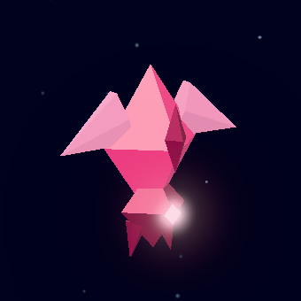

Mite
The pawns. Always the biggest group, and they hold the front two rows to screen the stronger enemies behind them.
Hits to destroy 1Scrap 15%
- Threat
- Dives at you and rams, wobbling side to side on the way down. Does not shoot until wave 7. From wave 2, two or three usually leave with a stronger enemy (a wasp, weaver, splitter or beetle) and fly just ahead of it as an escort, so your shots hit them first.
- Beat it
- One shot. Clear the bottom row first so divers have less room.